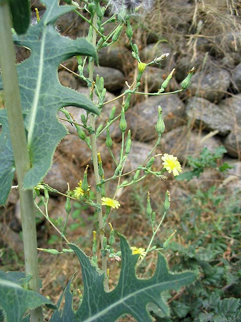
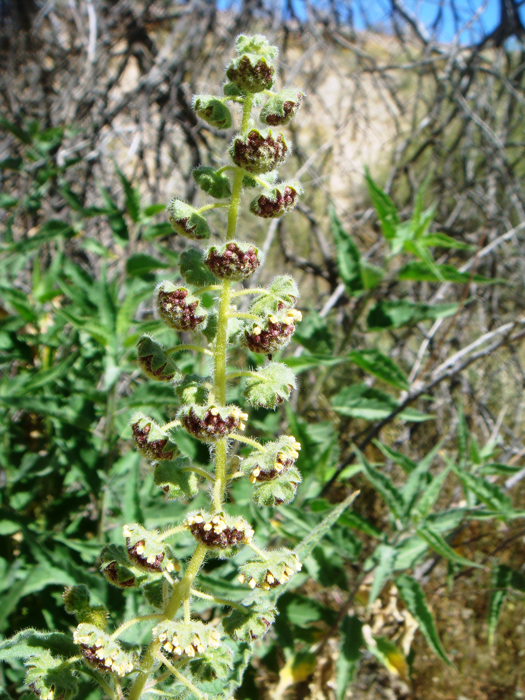
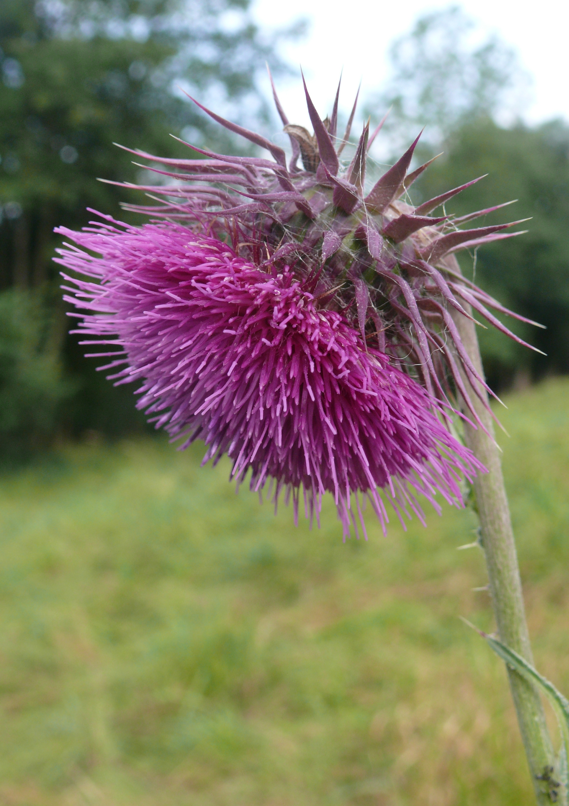
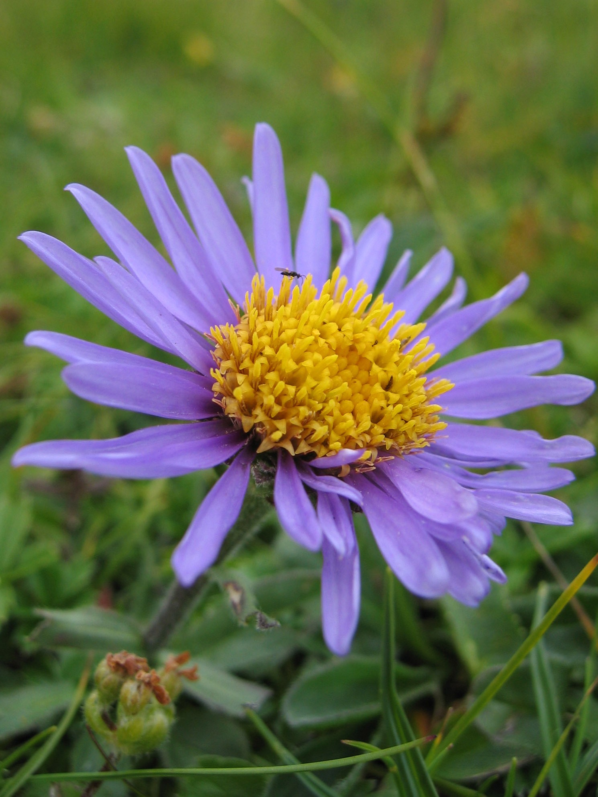
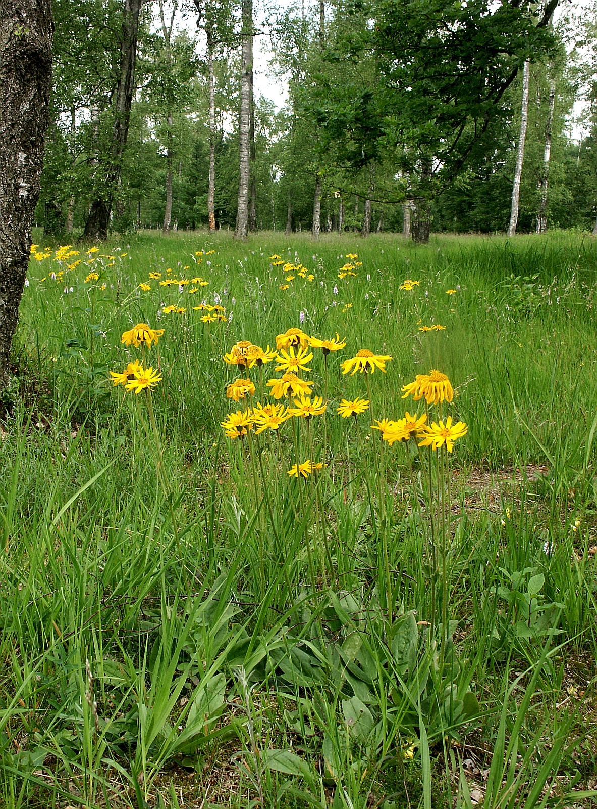
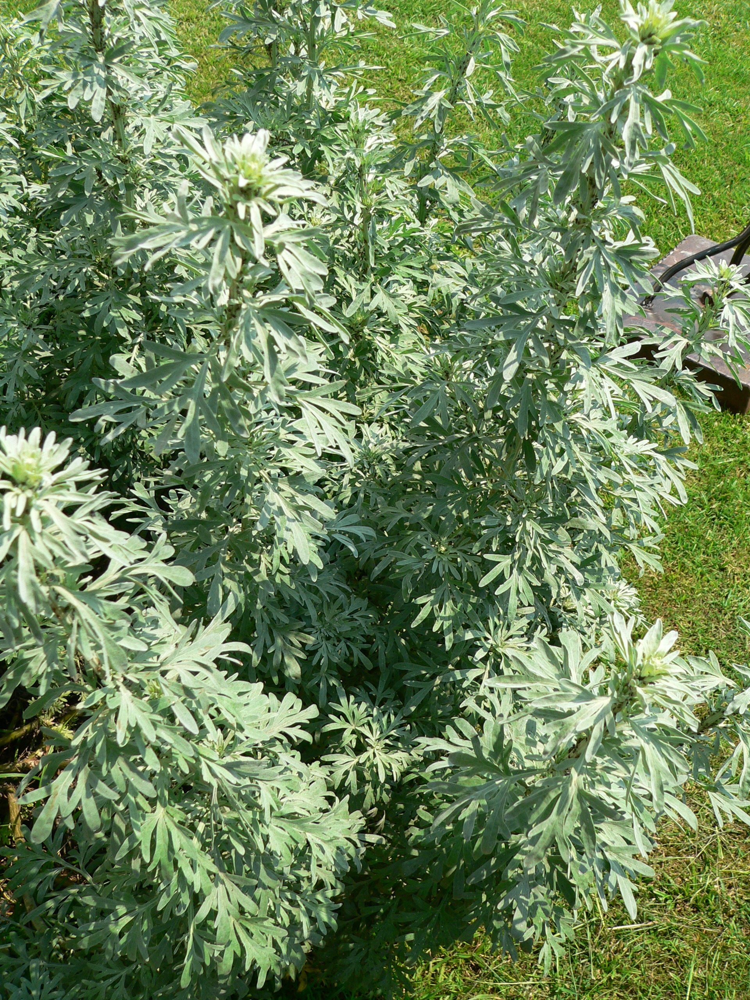
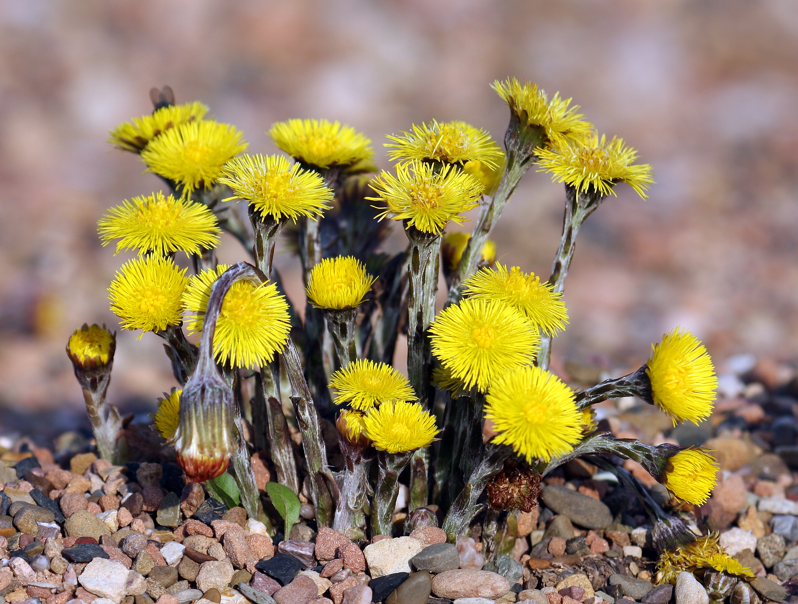
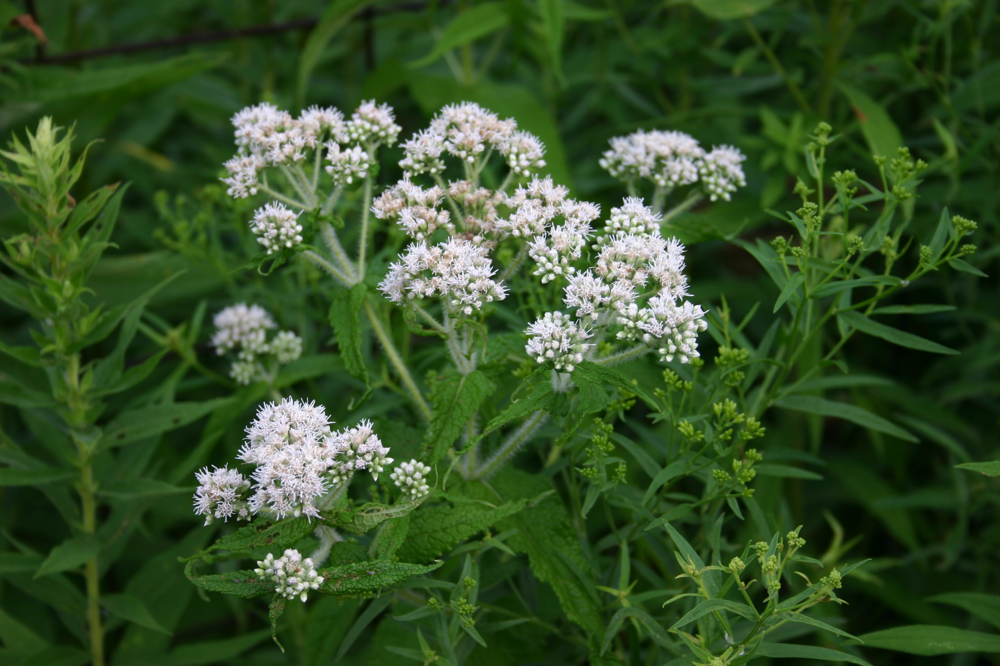

Asteraceae
aster/daisy family
|  Lactuca serriola (prickly lettuce), in the Cichorioideae subfamiliy from Wikimedia Commons by Jeantosti, CC BY-SA 3.0 |
 Ambrosia ambrosioides (ragweed), in the Asteroidiaea subfamily (Heliantheae tribe) from Wikimedia Commons by Miwasatoshi - Own work, CC BY-SA 4.0 |
|  Carduus nutans (nodding thistle), in the Carduoideae subfamily from Wikimedia Commons by Bernd Haynold - Self-photographed, CC BY-SA 3.0 |
 Aster alpinus (aster), in the Asteroideae subfamily (Astereae tribe) from Wikimedia Commons by Michael Schmid - Self-photographed, CC BY-SA 2.0 |
{kind=link}
{kind=link}
{kind=link}
{kind=link}
botanical characteristics
Botany in a Day, p. 163-74 | "Asteraceae", Wikipedia | "Calenduleae", Wikipedia
- overall characteristics
- 'sepals' are actually bracts (modified leaves), which often appear in multiple layers
- fruit often accompanied by hairy pappus
- composite flowers: what look like big 'flowers' but actually consist of multiple smaller flowers
- Asteraceae plants can have disk flowers, ray flowers, or both
- disk flowers: small flowers that comprise a central disk or cone, each with small petals, stamens, and pistil
- ray flowers: large 'petals' radiating around the central disk, often infertile (without stamens or pistil)
- generally produce taproots, but sometimes they possess fibrous root systems
- stems are herbaceous, aerial, branched, and cylindrical with glandular hairs, usually erect, but can be prostrate to ascending
- leaves can be alternate, opposite, or whorled; they may be simple, but are often deeply lobed or otherwise incised; margins also can be entire or toothed
- Cichorioideae (chicory) subfamily
- most distinctive subfamily
- strap-shaped ray flowers with parallel (sometimes toothed) edges instead of tapered edges
- often overlap all the way to the center of the flower
- no disk flowers
- milky juice in the stems
- bitter, makes members of this subfamily useful as digestive aids
- many (if not most) members are edible
- Carduoideae (thistle) subfamily
- flower head protected insight a tight wrapping of bracts like an artichoke
- most members have some prickly parts, especially the bracts around the flowers
- often edible (apart from their spines, coarse texture, and fibrous nature)
- Mutisioideae (mutisia) subfamily
- disk flowers irregular, 2-lipped flowers with 2 petal lobes up and 3 petal lobes down
- Asteroideae (aster) subfamily
- large subfamily, separated into several tribes that are more useful for identification
- Eupatorieae (boneset) tribe
- stigmata are tickened at the ends like a baseball bat
- no ray flowers, none of the blossoms are pure yellow
- often confused with members of ironweed tribe
- Vernonieae (ironweed) tribe
- can be distringuised from boneset tribe members by the shape of the stigma, which is long, thread-like, and hairy
- no ray flowers, none of the blossoms are pure yellow
- Gnaphalieae (everlasting) tribe
- greyish vegetation
- bracts scarious (thin, dry, translucent) and are often colored
- flowers have disk flowers but no ray flowers
- not aromatic
- Inuleae (elecampane) tribe
- Anthemideae (chamomile) tribe
- somewhat scarious bracts
- some of the most aromatic members of Asteraceae, helps to distinguish from Gnaphalieae
- Senecioneae (groundsel) tribe
- many members grow a pappus or tuft of white hairs around each of the little flowers inside the larger head
- distinguished from other asters by the soft, silky pappus hair, which is usually pure white and very abundant
- Tageteae (marigold) tribe
- some are fragrant or pungent
- Heliantheae (sunflower) tribe
- often have small bracts attached to the base of each disk flower
- most members are noticeably resinous and useful as expectorants
- includes ragweeds, which are unisexual (male and female flowers occuring separately), which is rare for asters
- Coreopsideae (tickseed) tribe
- closely related to sunflower tribe, but not resinous
- Helenieae (sneezeweed) tribe
- most members have only one row of bracts (none have more than three rows)
- often have glands or dots of resin on the leaves
- Astereae (aster) tribe
- numerous, very slender ray flowers
- multiple layers of bracts of unequal length
- mostly nonresinous
- Calendulae (calendula) tribe
- fruit lacks a pappus
distribution
Botany in a Day, p. 163
- second largest family of flwoering plants (second only to the orchids)
"Asteraceae", Wikipedia
- large family of flowering plants that consists of over 32,000 known species in over 1,900 genera
- widespread distribution, from subpolar to tropical regions, in a wide variety of habitats
- most occur in hot desert and cold or hot semi-desert climates, and they are found on every continent but Antarctica
- species outside of their native ranges can become weedy or invasive
"Cichorioideae", Wikipedia
- 240 genera and about 2900 species worldwide
"Mutisioideae", Wikipedia
- 630 species assigned to 44 different genera
- this subfamily is mainly native in South America but has species in all continents other than Europe and Antarctica
"Asteroideae", Wikipedia
- contains about 70% of the species of the family
- contains plants found all over the world, many of which are shrubby
- about 1,135 genera and 17,200 species within this subfamily
ecological roles
"Asteraceae", Wikipedia
- many members of Asteraceae are pollinated by insects, which explains their value in attracting beneficial insects
- anemophily (wind pollination) is also present
- seeds are ordinarily dispersed intact with the fruiting body, the cypsela
- anemochory (wind dispersal) is common, assisted by a hairy pappus
- epizoochory is another common method, in which the dispersal unit, a single cypsela or entire capitulum has hooks, spines or some structure to attach to the fur or plumage (or even clothes) of an animal just to fall off later far from its mother plant
- some members of Asteraceae are economically important as weeds
- a number of species are toxic to grazing animals
- several members of the family are copious nectar producers and are useful for evaluating pollinator populations during their bloom
common pharmacological constituents
"Angiosperm families - Compositae Giseke", DELTA
- sugars transported as sucrose, or as sugar alcohols + oligosaccharides + sucrose; inulin recorded (very widespread); cyanogenic (rarely), or not cyanogenic; cynogenic constituents phenylalanine-derived, or of Hegnauer’s ‘Group C’; polyacetylenes recorded, alkaloids present, or absent, anthraquinones detected (3 genera); polyacetate derived; verbascosides detected (Echinacea); arbutin present, or absent; iridoids not detected; saponins/sapogenins present, or absent; proanthocyanidins absent (with the exception of Cosmos bipinnatus, with a trace of cyanidin); flavonols present (mostly), or absent; kaempferol, or quercetin, or kaempferol and quercetin; ellagic acid practically always absent (absent from 40 species and 28 genera, with a positive record only for Tagetes patula); ursolic acid present; aluminium accumulation not found (but many accumulate selenium); sieve-tube plastids S-type
"Asteraceae", Wikipedia
- energy store is generally in the form of inulin rather than starch
- flavonoids, iso/chlorogenic acid, sesquiterpene lactones, pentacyclic triterpene alcohols, various alkaloids, acetylenes (cyclic, aromatic, with vinyl end groups), tannins, terpenoid essential oils that never contain iridoids
- some of these molecules (esp. flavonoids and terpenoids) can inhibit protozoan parasites such as Plasmodium, Trypanosoma, Leishmania and parasitic intestinal worms, and thus have potential in medicine
patterns in medicinal actions
- strong medicine on the body with a drying/purifying action -- tendency towards the void, saturnian
- supportive in acute wet conditions like colds, flus
- supports the body to filter/purify in both acute conditions (e.g., to induce a sweat) and for chronic/long-term health (e.g., supporting the liver)
- alterative/hepatic/cholagogue
- Arctium, Taraxacum, Cynara, Calendula, Echinacea, Silybum
- astringent/vulnerary
- Calendula, Achillea, Echinacea, Artemisia, Grindelia, Arnica
- anti-inflammatory
- Calendula, Achillea, Echinacea, Artemisia, Matricaria, Solidago, Arnica
- antiseptic/antibacterial/antiviral/antifungal/antiparasite
- Calendula, Achillea, Matricaria, Arctium, Echinacea, Inula, Artemisia, Solidago, Grindelia, Arnica
- expectorant/anti-tussive/decongestant/diaphoretic
- Solidago, Tussilago, Inula, Grindelia, Achillea, Echinacea, Arctium, Matricaria, Eupatorium
- action on the immune system
- Echinacea, Eupatorium, Tussilago
traditional/cultural uses
"Asteraceae", Wikipedia
- important in herbal medicine
- economically important family, providing products such as cooking oils, leaf vegetables like lettuce, sunflower seeds, artichokes, sweetening agents, coffee substitutes and herbal teas
- several genera are of horticultural importance, including pot marigold (Calendula officinalis), Echinacea (coneflowers), various daisies, fleabane, chrysanthemums, dahlias, zinnias, and heleniums
- commercially important plants in Asteraceae include the food crops Lactuca sativa (lettuce), Cichorium (chicory), Cynara scolymus (globe artichoke), Helianthus annuus (sunflower), Smallanthus sonchifolius (yacón), Carthamus tinctorius (safflower) and Helianthus tuberosus (Jerusalem artichoke)
- plants are used as herbs and in herbal teas and other beverages
- wormwood genus Artemisia includes absinthe (A. absinthium) and tarragon (A. dracunculus)
- many members of the family are grown as ornamental plants for their flowers, and some are important ornamental crops for the cut flower industry: Chrysanthemum, Gerbera, Calendula, Dendranthema, Argyranthemum, Dahlia, Tagetes, Zinnia, and many others
- Centaurea (knapweed), Helianthus annuus (domestic sunflower), and some species of Solidago (goldenrod) are major honey plants for beekeepers
- Solidago produces relatively high protein pollen, which helps honey bees over winter
warnings
- some plants are toxic in large doses and/or cannot be taken for extended periods of time
"Asteraceae", Wikipedia
- sesquiterpene lactone compounds contained within many members are an important cause of allergic contact dermatitis
- allergy to these compounds is the leading cause of allergic contact dermatitis in florists in the US
- pollen from ragweed Ambrosia is among the main causes of so-called hay fever in the United States
extra information
"Asteraceae", Wikipedia
- previously called Compositae
prominent genera
Cichorioideae
- Cichorium (chicories, endives)
- Lactuca (lettuces)
- Taraxacum (dandelions)
Carduoideae
- Arctium (burdocks)
- Carduus (thistles)
- Carthamus (distaff thistles, incl. safflower)
- Cirsium (thistles)
- Cynara (artichokes)
- Silybum (milk thistles)
Mutisioideae
- Adenocaulon (trailplants)
- Chaptalia (sunbonnets)
- Gerbera (African daisies)
- Mutisia (mutisias)
Asteroideae - Eupatorieae
- Eupatorium (incl. boneset, gravelroot)
- Stevia (stevias)
Asteroideae - Vernonieae
- Vernonia (ironweeds)
Asteroideae - Gnaphalieae
- Gnaphalium (everlastings, cudweeds)
Asteroideae - Inuleae
- Inula (elecampanes)
Asteroideae - Anthemideae
- Achillea (yarrows)
- Anthemis (chamomiles)
- Artemisia (incl. sagebrush, wormwood, tarragon, mugwort)
- Chrysanthemum (chrysanthemums)
- Matricaria (mayweeds, incl. chamomile)
- Tanacetum (tansies)
Asteroideae - Senecioneae
- Senecio (groundsels, ragworts)
- Jacobaea (ragworts)
- Tussilago (coltsfoots)
Asteroideae - Tageteae
- Tagetes (marigolds)
Asteroideae - Heliantheae
- Ambrosia (ragweeds)
- Arnica (arnicas)
- Echinacea (echinaceaes, purple coneflowers)
- Helianthus (sunflowers, jerusalem artichokes, sun tubers)
- Zinnia (zinnias)
Asteroideae - Coreopsideae
- Cosmos (cosmos)
- Coreopsis (tickseeds)
- Dahlia (dahlias)
Asteroideae - Helenieae
- Gaillardia (blanket flowers)
- Helenium (sneezeweeds)
Asteroideae - Astereae
- Aster (asters)
- Bellis (daisies)
- Erigeron (fleabanes)
- Grindelia (gumweeds)
- Solidago (goldenrods)
Asteroideae - Calendulae
- Calendula (calendula)
plant highlights
see list of materia medica entries here
Grindelia spp.
 from Wikimedia Commons by Walter Siegmund (talk) - Own work, CC BY-SA 3.0 |
common names: grindelia, gumweed en español: grindelia |
description
"Grindelia", Wikipedia
- herbaceous plants or subshrubs with annual, biennial, or perennial life cycles
- flowerheads are composed of numerous yellow disc florets (usually between 100–200) and from zero to sixty or more yellow or orange ray florets
distribution
"Grindelia", Wikipedia
- native to South America, Mexico, and western North America, though some species have been introduced and naturalized in eastern North America and the Old World
medicinal/magical uses
The Modern Herbal Dispensatory, p. 242-3
- antiseptic, astringent, decongestant, expectorant, warming, drying, constricting, resinous
- very good at breaking up hardened mucus in the respiratory tract
- eases breathing in bronchitis and asthma, antispasmodic action affects the lungs
- with plantain to pull thick mucus out of the lungs
- topically to heal skin afflictions like poison ivy, rashes, insect bites
The New Age Herbalist, p. 48
- antispasmodic, expectorant
- relaxes the bronchi and expels phlegm from teh airways, useful for asthma and bronchitis
- slows rapid heart rate, antispasmodic action extends to the heart and tends to lower blood pressure
- can help reduce hayfever
- externally to soothe insect bites and rash from poison ivy
preparation methods
The Modern Herbal Dispensatory, p. 242-3
- tincture
- oil/salve
warnings
The Modern Herbal Dispensatory, p. 242-3 | The New Age Herbalist, p. 48
- can be toxic in large doses
- not for long-term use or for use by those suffering from kidney or heart disease
- use as directed by a qualified practitioner
Arnica montana
|  from Wikimedia Commons by Bernd Haynold - Own work, CC BY-SA 2.5 |
common names: arnica, wolfsbane, mountain tobacco en español: árnica |
{kind=link}
description
"Arnica montana", Wikipedia
- aromatic, fragrant, herbaceous perennial
- the basal green ovate leaves with rounded tips are brighly coloured; upper leaves are opposed, spear-shaped and smaller
- flower heads are composed of orange-yellow disc florets in the centre which are externally bordered by 10 to 15 yellow ray florets
- achenes have a one-piece rough pappus which opens in dry conditions
- forms rhizomes
distribution
"Arnica montana", Wikipedia | "Species At-Risk List", United Plant Savers
- widespread across most of Europe
- grows in nutrient-poor siliceous meadows or clay soils
- mostly grows on alpine meadows and up to nearly 3,000 m (9,800 ft)
- may also be found on nutrient-poor moors and heaths
- Arnica does not grow on lime soil, thus it is an extremely reliable bioindicator for nutrient poor and acidic soils
- rare overall, but may be locally abundant; becoming rarer, particularly in the north of its distribution, largely due to increasingly intensive agriculture and commercial wildcrafting (foraging)
- cultivated on a large scale in Estonia
- listed as 'Least Concern' on the IUCN Red List of Threatened Species
- listed as 'In Review' by United Plant Savers
medicinal/magical uses
The Modern Herbal Dispensatory, p. 176-7
- analgesic, anti-inflammatory, anticoagulant, vasodilator, vulnerary, warming, drying
- used to reduce swelling, bruising, and pain from injury and trauma
- in higher doses, acts as a cardiac tonic and improves the supply of blood through the coronary vessels
- should be highly diluted when taken internally
The New Age Herbalist, p. 41
- famous herbal and homeopathic remedy for wounds, bruises, and other injuries
- extract is reported to increase the resistance of animals to bacterial infection by stimulating the action of white blood cells to clear away harmful bacteria
- helps reduce fever
- stimulates the heart and circulation and can cause reabsorption of internal bleeding
preparation methods
The Modern Herbal Dispensatory, p. 176-7
- tincture
- oil/salve
warnings
The Modern Herbal Dispensatory, p. 176-7 | The New Age Herbalist, p. 41
- internal use only under professional supervision
- internal use can cause gastric irritation
- high doses can cause intoxication, dizziness, tremors, tachycardia, arrhythmia, and collapse
- tincture should not be used during pregnancy or while nursing
- can cause contact dermititis
- do not apply to broken or sensitive skin
Artemisia absinthium
|  from Wikimedia Commons by David Monniaux - Own work, CC BY-SA 3.0 |
common names: wormwood en español: ajenjo |
{kind=link}
description
"Artemisia absinthium"
- leaves are spirally arranged, greenish-grey colored above, white below, covered with silky silvery-white trichomes, and bearing minute oil-producing glands
- basal leaves are bi- to tripinnate with long petioles, with the cauline leaves (those on the stem) smaller, less divided, and with short petioles
- flowers are pale yellow, tubular, and clustered in spherical bent-down heads, which are in turn clustered in leafy and branched panicles
- fruit is a small achene and seed dispersal occurs by gravity
distribution
"Artemisia absinthium"
- native to North Africa and temperate regions of Eurasia
- widely naturalized in Canada and the northern United States
- grows naturally on uncultivated arid ground, on rocky slopes, and at the edge of footpaths and fields
medicinal/magical uses
The Modern Herbal Dispensatory, p. 325
- antiparasitic, bitter, stomachic, vermifuge, cooling, drying
- powerful antiparasitic herb used to expel tapeworms and other internal worms and parasites
- stimualates the digestion and apetite
The New Age Herbalist, p. 41
- once used to flavor absinthe; banned in 1915 because too much causes damage to the nervous system
- mainly used as a bitter tonic to stimulate the apetite, the digestive juices, peristalsis, the liver, and the gallbladder
- expels worms, especially round worms and threadworms
- anti-inflammatory and helps reduce fevers
preparation methods
The Modern Herbal Dispensatory, p. 325
- infusion
- tincture
warnings
The Modern Herbal Dispensatory, p. 325 | The New Age Herbalist, p. 41
- strong, potentially toxic herb
- should not be used during pregnancy or when nursing
- should only be used for short periods (no longer than 4-5 weeks at a time) and preferably in formulation
- classified as dangerous by the FDA
Tussilago farfara
|  from Wikimedia Commons by Andreas Trepte - Own work, CC BY-SA 2.5 |
common names: coltsfoot en español: pie de caballo, fárfara |
{kind=link}
description
"Tussilago farfara", Wikipedia
- perennial herbaceous plant that spreads by seeds and rhizomes; often found in colonies of dozens of plants
- flowers superficially resemble dandelions: yellow florets with an outer row of bracts
- leaves have angular teeth on their margin; they appear after the flowers have set seed and wither and die in the early summer
distribution
"Tussilago farfara", Wikipedia
- widespread across Europe, Asia, and North Africa
- common plant in North and South America where it has been introduced, most likely by settlers as a medicinal item, or to provide early blooms for honeybees
- often found in waste and disturbed places and along roadsides and paths
- in some areas it is considered an invasive species
medicinal/magical uses
The Modern Herbal Dispensatory, p. 216
- antitussive, expectorant, cooling, moistening
- great remedy for debilitated individuals with chronic respiratory conditions
- indicated for asthma and emphysema
- can decrease the time for bronchial cilia to recover after damage from smoking
- extracts shown to increase immune resistance and act as a natural antihistamine
The New Age Herbalist, p. 52
- smoked to relieve cough since ancient times
- flower used as a symbol above Parisian pharmacies
- combines effective expectorant action with soothing and healing qualities of mucilage
- good for most respiratory problems and colds
- externally as a poultice for ulcers and sores
preparation methods
The Modern Herbal Dispensatory, p. 216
- infusion
warnings
The Modern Herbal Dispensatory, p. 216 | The New Age Herbalist, p. 52
- not for use during pregnancy or while nursing
- contains pyrrolizidine alkaloids; may be toxic in high doses
- use only as directed and for no longer than 6 weeks a year
- best to avoid excessive consumption
Eupatorium perfoliatum
|  from Wikimedia Commons by I, SB Johnny, CC BY-SA 3.0 |
common names: boneset, feverwort, agueweed en español: eupatoria |
{kind=link}
description
"Eupatorium perfoliatum", Wikipedia
- opposite, serrate leaves that clasp the hairy stems
- dense clusters of tiny white flower heads held above the foliage
distribution
"Eupatorium perfoliatum", Wikipedia
- common native to the Eastern United States and Canada, widespread from Nova Scotia to Florida, west as far as Texas, Nebraska, the Dakotas, and Manitoba
- native habitats include damp prairies, bogs, and alluvial woods
- listed as 'Secure' by NatureServe
medicinal/magical uses
The Modern Herbal Dispensatory, p. 193
- bitter, diaphoretic, emetic, cooling, drying, slightly relaxing
- aromatic and bitter herb traditionally used for colds, fevers, and flu
- stimulates white blood cell action
- very helpful with flu accompanied by aches in the muscles
- as a cold tea, acts as a bitter tonic and mild laxative to strengthen and tone the bowels
- with mint to help relieve vomiting and bloating
- with ginger and anise to aid coughs
The New Age Herbalist, p. 45, 48
- name 'boneset' refers to its use in treating a virulent form of flu called 'break bone fever'
- excellent remedy for colds and catarrh
- used to treat muscular rheumatism caused by exposure to cold and damp
- useful for stomach problems of nervous origin
- tincture has been shown to have a mild anti-inflammatory effect
- as a hot infusion has a diaphoretic effect, stimulates peripheral circulation
- in small doses, the tincture or cold infusion has a tonic effect on the digestive system; can cause diarrhea and vomiting in larger doses
preparation methods
The Modern Herbal Dispensatory, p. 193
- infusion
- tincture
- glycerite
warnings
The Modern Herbal Dispensatory, p. 193
- use cautiously during pregnancy
- long-term use not recommended
sources
"Angiosperm families - Compositae Giseke" on DELTA - DEscription Language for TAxonomy. Retrieved 18 August 2025.
"Arnica montana" on Wikipedia. Retrieved 18 August 2025.
"Artemisia absinthium" on Wikipedia. Retrieved 18 August 2025.
"Asteraceae" on Wikipedia. Retrieved 18 August 2025.
"Asteroideae" on Wikipedia. Retrieved 18 August 2025.
"Calendulae" on Wikipedia. Retrieved 18 August 2025.
"Carduoideae" on Wikipedia. Retrieved 18 August 2025.
"Cichorioideae" on Wikipedia. Retrieved 18 August 2025.
Easely, Thomas and Steven Horne. The Modern Herbal Dispensatory (2016)
Elpel, Thomas J. Botany in a Day: The Patterns Method of Plant Identification (2021)
"Eupatorium perfoliatum" on Wikipedia. Retrieved 18 August 2025.
Goldberg Blackthorn, Samantha. Ace of Cups Herbal Medicine and Botanical Magic Herbal School (2024)
"Grindelia" on Wikipedia. Retrieved 18 August 2025.
Mabey, Richard et al. The New Age Herbalist (1988)
"Mutisioideae" on Wikipedia. Retrieved 18 August 2025.
"Species At-Risk List" on United Plant Savers. Retrieved 18 August 2025.
"Tussilago farfara" on Wikipedia. Retrieved 18 August 2025.